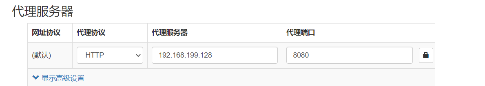
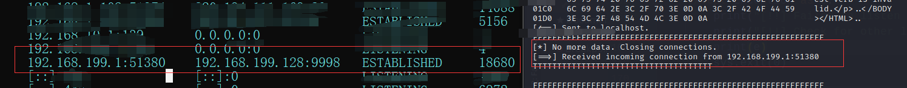
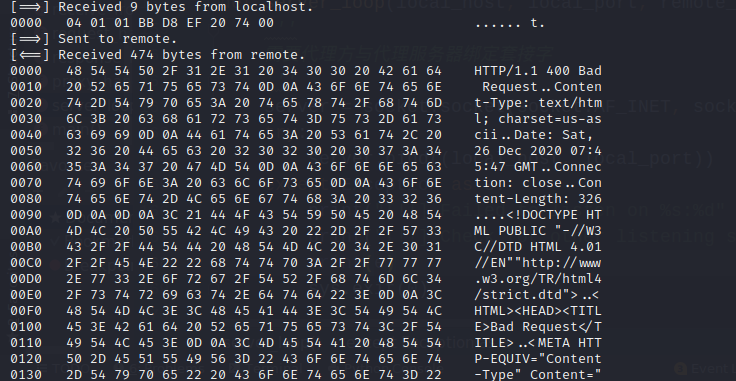

前言
总算有时间了，赶紧学一会。
为什么要创建一个TCP代理
书中原话：
有很多理由让你的工具箱里，保留一个TCP代理，它不仅可以将流量从一个主机转发给另一个主机，而且可以评估基于网络的软件。在企业级环境下进行渗透测试时，你会经常遇到无法使用Wireshark的情况，无法在windows系统上加载驱动嗅探本地网络流量，分段的网络也阻止使用工具直接嗅探目标主机。我经常在实际案例中部署简单的TCP代理以了解未知的协议，修改发送到应用的数据包，或者为模糊测试创建一个测试环境。
原理
首先要搞清楚原理，网上搜索的时候看到了一篇介绍：《简单聊聊网络代理原理》https://zhuanlan.zhihu.com/p/56271931
Python实现TCP代理的原理
- 【需要代理方】向代理服务器发出请求信息。
- 【代理服务器】应答。
- 【需要代理方】接到应答后发送向【代理服务器】发送【目的】ip和端口。
- 【代理服务器】与目的连接。
- 【代理服务器】将【需要代理方】发出的信息传到【目的方】，将目的方发出的信息传到【需要代理方】。
- 代理完成。
画了个图：
基于Python3实现的TCP代理
书上是2.x版本的，想要改成3.x版本的。网上一搜，前辈们已经在几年前就替我们实现了。把代码改变了一下
我已经把所有代码都写上了注释。
解释一下【receive_first】参数：
这个参数如果是True，程序会先接受远程目标主机发送的数据，因为有些服务进程可能会做这样的事情，例如ftp服务器一般会首先发送旗标。
代码
#说明：这里涉及到三方：本地主机、远程主机和服务器。
#该段代码是运行在Linux服务器上的，为本地主机提供代理以便与远程主机通信。
#!/usr/bin/python
# -*- coding:utf-8 -*-
import sys
import socket
import threading
import logging
import ctypes
logging.basicConfig(level=logging.DEBUG,
# 格式化输出
format='%(asctime)s - %(levelname)s : %(message)s',
# 日志信息输出到文件中
#filename="./TCP_proxy.log", filemode="a"
)
'''
logging 为调试部分。不想显示调试信息可以把logging.basicConfig的level改成更高的等级，或者注释logging语句。
'''
def hex_dump(src, length=16):
'''
显示数据包的十六进制，并显示对应的ASCII码。
'''
result = []
digits = 4 if isinstance(src, str) else 2
for i in range(0, len(src), length):
s = src[i:i + length]
hexa = ' '.join(["%0*X" % (digits, (x)) for x in s])
logging.debug("\t\thexa:%s" % hexa)
logging.debug("".join(str(type(x)) for x in s))
text = ''.join([chr(x) if 0x20 <= x < 0x7F else '.' for x in s])
logging.debug("\t\ttext:%s" % text)
result.append("%04X %-*s %s" % (i, length * (digits + 1), hexa, text))
print('\n'.join(result))
def receive_from(connection):
'''
接收本地或远程主机的数据
'''
buffer = b""
# 接收数据需要在2s内处理完成，否者抛出超时异常。 这个时间有些短，后续测试的时候输入FTP账号、密码的时间有些紧。。。
# 可调长一些，但其实应该用更科学的办法来处理。。。 还是那句话，后面的路还很远，先略过。。。
connection.settimeout(2)
try:
# 一直读入缓冲区，直到没有更多的数据
# 我们给它设置超时报错
while True:
data = connection.recv(4096)
if not data:
# 显示函数没有接收到数据
logging.info("def receive_from no data return")
break
logging.info("receive data:%s\n" % data)
buffer += data
except Exception as e:
# 显示该函数的报错信息
logging.info('def receive_from error:%s' % e)
return buffer
def request_handler(buffer):
'''
可以在该函数中修改传送到目标主机的数据（请求数据）。
功能未完待续
执行包修改
'''
return buffer
def response_handler(buffer):
"""
可以在该函数中修改目标主机返回到本地主机的数据（响应数据）
功能未完待续
执行包修改
"""
return buffer
def proxy_handler(client_socket, remote_host, remote_port, receive_first):
'''
在线程中处理代理任务
代理服务器与目标绑定套接字
'''
# 打印该线程ID，语句只能在Linux下执行
threading_id = ctypes.CDLL('libc.so.6').syscall(186)
# 请求与目标主机的连接。
remote_socket = socket.socket(socket.AF_INET, socket.SOCK_STREAM)
remote_socket.connect((remote_host, remote_port))
# 如有必要先从目标接受数据,如FTP服务器会先发送旗标等等
if receive_first:
# 接收远程主机的数据
remote_buffer = receive_from(remote_socket)
# 在日志中打印出原始数据
logging.info("threading id: %s remote_buffer:%s\n" % threading_id, remote_buffer)
# 调用十六进制转储函数
hex_dump(remote_buffer)
# 将它发送到我们的响应处理器
# 响应函数什么都没写，数据还是原样返回
remote_buffer = response_handler(remote_buffer)
# 如果从目标接受到了数据，就发送到我们的本地客户端
if len(remote_buffer):
print("[<==] Sending %d bytes to localhost." % len(remote_buffer))
client_socket.send(remote_buffer)
# 现在我们循环读取数据，发送给远程主机和本地客户端
while True:
# 接收本地主机的数据
local_buffer = receive_from(client_socket)
# 如果有数据就打印
if len(local_buffer):
print("[==>] Received %d bytes from localhost." % len(local_buffer))
hex_dump(local_buffer)
# 将它发送到我们的请求处理程序
# 请求处理函数什么都没写，数据还是原样返回
local_buffer = request_handler(local_buffer)
# 将数据发送到目标主机
remote_socket.send(local_buffer)
print("[==>] Sent to remote.")
# 接收远程主机的数据
remote_buffer = receive_from(remote_socket)
# 如果有数据就打印
if len(remote_buffer):
print("[<==] Received %d bytes from remote." % len(remote_buffer))
hex_dump(remote_buffer)
# 发送到我们的响应处理器
remote_buffer = response_handler(remote_buffer)
# 将响应发送到本地套接字
client_socket.send(remote_buffer)
print("[<==] Sent to localhost.")
# 如果两边没有更多的数据，则关闭连接
if not len(local_buffer) or not len(remote_buffer):
client_socket.close()
remote_socket.close()
print("[*] No more data. Closing connections.")
break
def server_loop(local_host, local_port, remote_host, remote_port, receive_first):
'''
【需要代理方】与【代理服务器】绑定套接字
'''
# 创建一个套接字对象
server = socket.socket(socket.AF_INET, socket.SOCK_STREAM)
try:
# 绑定服务地址
server.bind((local_host, local_port))
except Exception as e:
print(e)
print("[!!] Failed to listen on %s:%d" % (local_host, local_port))
print("[!!] Check for other listening sockets or correct permissions.")
sys.exit(0)
print("[*] Listening on %s:%d" % (local_host, local_port))
server.listen(5)
while True:
# 返回一个二元元组
client_socket, addr = server.accept()
# 打印客户端连接信息
print("[==>] Received incoming connection from %s:%d" % (addr[0], addr[1]))
# 启动一个线程与目标通信
proxy_thread = threading.Thread(target=proxy_handler,
args=(client_socket, remote_host, remote_port, receive_first))
proxy_thread.start()
def main():
'''
解析运行参数，调用服务。
'''
# 这里没有花哨的命令行解析
if len(sys.argv[1:]) != 5:
print("Usage: ./proxy.py [localhost] [localport] [remotehost] [remoteport] [receive_first]")
print("Example: ./proxy.py 127.0.0.1 9000 10.12.132.1 9000 True")
sys.exit(0)
# 设置本地监听参数
local_host = sys.argv[1]
local_port = int(sys.argv[2])
# 设置远程目标
remote_host = sys.argv[3]
remote_port = int(sys.argv[4])
# 这告诉我们的代理连接和接收数据
# 在发送到目标主机之前
receive_first = sys.argv[5]
if "True" in receive_first:
receive_first = True
else:
receive_first = False
# 现在打开监听套接字
server_loop(local_host, local_port, remote_host, remote_port, receive_first)
if __name__ == "__main__":
main()测试代码
环境：win10物理机、kali linux 虚拟机 IP地址为192.168.199.128、谷歌浏览器与代理插件。
在kali上运行代码：Python3 TCP_Proxy.py 192.168.199.128 8080 cn.bing.com 80 True
在谷歌浏览器上打开代理

浏览器访问cn.bing.com
kali上显示的信息
先查看连接
（左边为Windows的cmd 右边为Kali的shell）

在看数据包
（这里不知道为什么是坏的数据包）

有些问题，等过段时间再解决。
数通安全的知识
抽空整理一下数通安全的知识，先放这里了。
cmd 运行多个命令
aa && bb
means：执行aa，成功后再执行bb
ex:node a.js && node b.js
如果a.js运行失败则b.js不会再运行
aa || bb
means：先执行aa，若执行成功则不再执行bb，若失败则再执行bb
ex:node a.js || node b.js
如果a.js运行失败则b.js再运行，如果a.js运行成功则b.js不再运行
aa & bb
means：先执行aa再执行bb，无论aa是否成功
ex: node a.js & node b.js
先运行a.js运行，不管运行a.js文件是否报错，b.js接着运行
参考
https://blog.csdn.net/qq_40549070/article/details/108193537
使用ctype获取线程id
https://blog.csdn.net/tjcwt2011/article/details/80885410
http://xiaorui.cc/archives/3017

- 本文链接：https://self-ferry.github.io/2020/12/25/BHP%E7%AC%AC%E4%BA%8C%E7%AB%A0-%E4%BA%8C-%E2%80%94%E2%80%94%E5%88%9B%E5%BB%BATCP%E4%BB%A3%E7%90%86/
- 版权声明：本博客所有文章除特别声明外，均默认采用 许可协议。
若没有本文 Issue，您可以使用 Comment 模版新建。
GitHub Issues